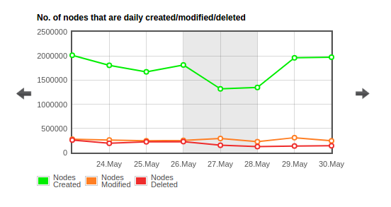

OpenStreetMap y el HOT

Qué es OpenStreetMap
OpenStreetMap es una base de datos de información geográfica creada y mantenida de forma voluntaria y colaborativa por una creciente comunidad de entusiastas de los mapas.
Los datos contenidos en las bases de datos de OpenStreetMap son de acceso libre y gratuito.
Historia
OpenStreetMap fue fundado por Steve Coast en 2004
Image By © Raimond Spekking / CC BY-SA 4.0 (via Wikimedia Commons), CC BY-SA 4.0, Link
OSM 10th Year Anniversary
https://www.youtube.com/embed/7sC83j6vzjoCómo se financia OpenStreetMap
El mantenimiento de servidores y redes de comunicación en base a donaciones voluntarias de particulares y empresas
http://donate.openstreetmap.org/
Número de usuarios registrados
Usuarios activos última semana / mes
Nodos en la base de datos

Nodos modificados por día
Quién hace OpenStreetMap ahora
http://osmlab.github.io/show-me-the-way/Datos agrupados por país
http://osmstats.neis-one.org/?item=countriesMiembros diarios activos en España

Nodos modificados por día en España

Usuarios en España
http://wiki.openstreetmap.org/wiki/Category:Users_in_SpainCataluña: Homogeneidad en el mapa: #1carrer1nom
- Homogeneización y calidad
- Niveles de revisión
- Fase 1: #1carrer1nom
- Coordinación: Wiki
- Herramienta de control de calidad
Zaragoza: accesibilidad

Burgos: calidad
Lista de correo en español de OpenStreetMap
https://lists.openstreetmap.org/listinfo/talk-es

WIKI Proyecto España
https://wiki.openstreetmap.org/wiki/ES:Wikiproyecto_EspañaGrupo de Telegram: OSM España
Proyectos de futuro
- Importaciones
- Conversaciones con IGN
Seguir generando y compartiendo información cartográfica de calidad
Humanitarian OpenStreetMap Team
Ayudando al mundo a través de la cartografía
OSM y los datos humanitarios
Los datos libres y abiertos son tremendamente beneficiosos para la ayuda humanitaria y el desarrollo económico.
Enero 2010
OpenStreetMap - Project Haiti from ItoWorld on Vimeo.
12 de enero de 2010

De una simple intersección de calles…

En la que empezaron a aparecer zonas y edificios…

Hasta que se completó con todos los campamentos de refugiados
El mejor mapa
de Puerto Principe

28 días después
Puente cartográfico
ONG creada en agosto de 2010

Red Humanitaria Digital
HOT Package
- Learn OSM
- Estadillos de campo
- Configuraciones de JOSM
- Tasking Manager
- Comunidad
learnosm.org

Estadillos de campo
Configuraciones de JOSM
Tasking Manager
Comunidad


Missing Maps Valencia: Geovoluntariado UPV (Diciembre 2016)
THE END
BY Pedro-Juan Ferrer, Santiago Higuera & Jorge Sanz

Esta obra está bajo una Licencia
Creative Commons Atribución-NoComercial-CompartirIgual
3.0 Unported.